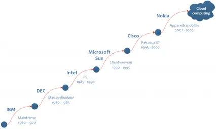
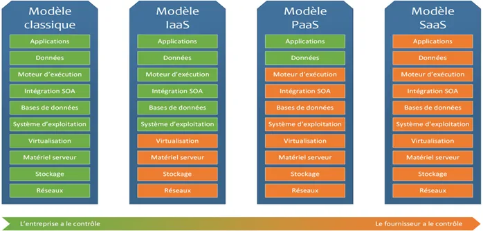
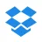
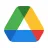
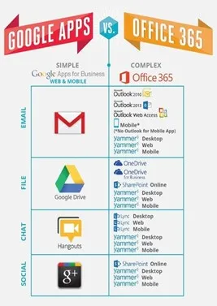

L'évolution du cloud computing
Le cloud computing a radicalement transformé l'informatique en deux décennies. Lancé commercialement par Amazon Web Services en 2006, il s'est imposé progressivement comme le modèle de référence pour les entreprises de toutes tailles.
Les grandes étapes de cette évolution :
- 2006 — Lancement d'Amazon Web Services (AWS), premier cloud public à grande échelle
- 2008-2010 — Arrivée de Google App Engine et Microsoft Azure
- 2012-2016 — Explosion du SaaS grand public (Office 365, Google Apps, Dropbox)
- 2018-2020 — Adoption massive en entreprise, stratégies hybrides et multi-cloud
- 2021-2023 — Souveraineté numérique, cloud de confiance, réglementation RGPD
- 2024-2025 — IA générative intégrée au cloud (Azure OpenAI, Google Vertex AI, AWS Bedrock), edge computing, FinOps

Définition
Le cloud computing, ou « informatique dans les nuages », désigne l'utilisation de serveurs distants pour stocker, traiter et partager des données, des applications ou des services. Au lieu de disposer d'une infrastructure informatique interne (serveurs, stockage, maintenance), les utilisateurs et les entreprises accèdent à ces ressources via Internet, à travers un navigateur ou une application.
Ce modèle repose sur la mutualisation des ressources : plutôt que chaque organisation gère son propre parc de serveurs, elle se « branche » au cloud, ce qui permet d'économiser, de gagner en flexibilité et de simplifier la gestion.
De nombreux services du quotidien reposent déjà sur le cloud : messageries (Gmail, Outlook), stockage de fichiers (OneDrive, Google Drive), outils collaboratifs (Teams, Meet), ou encore plateformes de streaming (Netflix, Spotify).
Pour les entreprises, le cloud représente un levier stratégique : il améliore la productivité, soutient l'innovation (notamment via l'IA) et permet d'accéder à des ressources à la demande. Toutefois, des défis persistent en matière de sécurité des données, de conformité réglementaire et de dépendance aux fournisseurs (vendor lock-in).
Avantages
💰 Réduction des coûts
Pas d'investissement initial en matériel. Le modèle pay-as-you-go permet de ne payer que ce qui est consommé. Les PME accèdent à des infrastructures de niveau entreprise sans CAPEX.
📈 Scalabilité
Les ressources (CPU, stockage, bande passante) s'ajustent à la demande en quelques minutes. Idéal pour gérer des pics d'activité sans surprovisionnement.
🌍 Accessibilité
Les données et applications sont accessibles partout dans le monde, depuis n'importe quel appareil connecté. Facilite le télétravail et la collaboration internationale.
🔄 Mises à jour automatiques
Les fournisseurs cloud gèrent les mises à jour, correctifs de sécurité et montées de version. L'entreprise bénéficie toujours de la dernière version sans intervention manuelle.
🛡️ Haute disponibilité
Les grands fournisseurs garantissent des SLA de 99,9 % à 99,99 % de disponibilité grâce à la réplication multi-datacenter et aux mécanismes de basculement automatique.
🤝 Collaboration
Les outils cloud (Teams, SharePoint, Google Workspace) permettent le travail en temps réel sur des documents partagés, depuis n'importe quel endroit.
Sécurité dans le cloud
La sécurité est l'un des enjeux les plus critiques du cloud. Elle repose sur un modèle de responsabilité partagée : le fournisseur sécurise l'infrastructure, le client sécurise ses données et ses accès.
- Le chiffrement des données — les données sont chiffrées en transit (TLS/HTTPS) et au repos (AES-256). Les grands fournisseurs proposent aussi la gestion de clés personnalisées (BYOK — Bring Your Own Key).
- L'authentification forte (MFA) — la mise en place d'une double authentification est désormais une exigence standard pour accéder aux ressources cloud en entreprise.
- L'identité et les accès (IAM) — les politiques IAM permettent de définir précisément qui peut accéder à quoi, selon le principe du moindre privilège.
- La conformité RGPD — les entreprises européennes doivent s'assurer que leurs données ne transitent pas vers des pays sans niveau de protection adéquat. Les fournisseurs certifiés ISO 27001, SOC 2 et HDS (hébergeur de données de santé) offrent des garanties supplémentaires.
- La détection des menaces — des services comme Microsoft Defender for Cloud, AWS GuardDuty ou Google Security Command Center analysent en temps réel les comportements suspects.
Inconvénients
- Dépendance à Internet — sans connexion, l'accès aux services cloud est impossible. Une panne réseau paralyse l'activité. La qualité du débit influence directement les performances.
- Vendor lock-in — une fois l'infrastructure construite sur un fournisseur (AWS, Azure, GCP), migrer vers un autre est coûteux en temps et en argent. Les formats propriétaires renforcent cette dépendance.
- Coûts difficilement prévisibles — le modèle à l'usage peut réserver des surprises si la consommation n'est pas maîtrisée. La discipline FinOps (gestion financière du cloud) est devenue une compétence à part entière.
- Localisation des données — les données peuvent être stockées dans des pays soumis à des législations différentes, ce qui pose des problèmes de conformité RGPD.
- Risque de pannes fournisseur — les incidents majeurs d'AWS, Azure ou OVH ont démontré que même les géants peuvent tomber, entraînant des interruptions massives pour leurs clients.
- Impact environnemental — les datacenters consomment une quantité considérable d'énergie et d'eau. En 2024, les datacenters représentent environ 1 à 2 % de la consommation électrique mondiale.
Les modèles de services cloud
- IaaS — Infrastructure as a Service
Seule l'infrastructure physique est gérée par le fournisseur (serveurs, stockage, réseau). L'entreprise garde le contrôle sur les OS, middleware et applications. Exemple : AWS EC2, Azure Virtual Machines, OVHcloud. - PaaS — Platform as a Service
Le fournisseur gère l'infrastructure ET la plateforme de développement. L'entreprise déploie ses applications sans gérer les serveurs. Exemple : Azure App Service, Google App Engine, Heroku. - SaaS — Software as a Service
L'application est entièrement gérée par le fournisseur, accessible via navigateur. Aucune installation requise. Exemple : Microsoft 365, Google Workspace, Salesforce, Zoom. - FaaS — Function as a Service (Serverless)
Exécution de fonctions à la demande, déclenchées par des événements, sans gestion de serveur. Facturation à l'exécution. Exemple : AWS Lambda, Azure Functions, Google Cloud Functions.
Autres modèles complémentaires :
- DaaS (Desktop as a Service) — bureaux virtuels accessibles à distance (Azure Virtual Desktop, Amazon WorkSpaces).
- DRaaS (Disaster Recovery as a Service) — plan de reprise d'activité hébergé dans le cloud.
- AIaaS (AI as a Service) — services d'IA à la demande : Azure OpenAI, Google Vertex AI, AWS Bedrock. Tendance majeure de 2024-2025.
- Edge Computing — traitement des données au plus près des utilisateurs (hors datacenter central), pour réduire la latence. Complémentaire au cloud traditionnel.

Les principales offres cloud en 2025
Les hyperscalers — leaders mondiaux
☁️ Amazon Web Services (AWS)
Leader mondial avec ~31 % de parts de marché (2024).
IaaS, PaaS, SaaS, IA (Bedrock, SageMaker), stockage (S3), compute (EC2), bases de données (RDS). Présence dans plus de 30 régions géographiques.
🔷 Microsoft Azure
2ème mondial avec ~25 % de parts de marché (2024).
Très présent en entreprise grâce à l'intégration native avec Microsoft 365, Active Directory et les outils DevOps. Azure OpenAI Service en forte croissance.
🟡 Google Cloud Platform (GCP)
3ème mondial avec ~11 % de parts de marché (2024).
Fort en data (BigQuery), IA (Vertex AI, Gemini), Kubernetes (GKE). Intégration native avec Google Workspace.
Les acteurs français — cloud souverain
🇫🇷 OVHcloud
Leader européen du cloud, dont le siège est à Roubaix. Datacenter en France, conformité RGPD native. Offres IaaS, PaaS, stockage objet (Object Storage), VPS. Alternative souveraine aux hyperscalers américains.
🇫🇷 Scaleway
Filiale du groupe Iliad (Free). Cloud français engagé sur l'environnement (datacenters à énergie verte). Offres IaaS, Kubernetes managé, bases de données, serverless. Prisé par les startups et développeurs.
🇫🇷 Cloud de confiance (ANSSI)
Label qualifié SecNumCloud de l'ANSSI pour les acteurs garantissant la souveraineté des données. Orange Business, Outscale (Dassault), Oodrive répondent à ces exigences pour les données sensibles de l'État et des OIV.
Solutions de stockage cloud grand public

Dropbox
2 Go gratuits. Abonnement Plus à 9,99 €/mois (2 To). Très populaire pour le partage de fichiers entre équipes. Intégration Office et Slack.

Google Drive
15 Go gratuits. Google One à partir de 1,99 €/mois (100 Go). Intégré à Google Workspace. Collaboration en temps réel native sur Docs, Sheets, Slides.
MEGA
20 Go gratuits. Pro I à 4,99 €/mois (400 Go). Chiffrement de bout en bout natif. Alternative axée confidentialité. Basé en Nouvelle-Zélande (hors juridiction CLOUD Act).
Comparaison : Microsoft 365 vs Google Workspace
MICROSOFT 365
Suite cloud de Microsoft : Exchange Online, SharePoint, OneDrive, Teams, Word, Excel, PowerPoint…
Business Basic
6,00 €/mois (engagement annuel)
- Exchange Online (50 Go boîte mail)
- SharePoint & OneDrive (1 To)
- Microsoft Teams
- Office Online uniquement
Apps for Business
9,90 €/mois (engagement annuel)
- Word, Excel, PowerPoint (desktop)
- Outlook, Publisher, OneNote
- OneDrive (1 To)
- Jusqu'à 300 utilisateurs
Business Standard ⭐
12,50 €/mois (engagement annuel)
- Tout Apps for Business +
- Exchange Online + SharePoint
- Teams avec webinaires
- Microsoft Copilot (IA) en option
Business Premium
22,00 €/mois (engagement annuel)
- Tout Business Standard +
- Microsoft Defender for Business
- Intune (MDM)
- Azure AD Premium P1
GOOGLE WORKSPACE
Anciennement Google Apps for Work, renommé en 2020. Gmail, Drive, Docs, Meet, Calendar, Chat…
Business Starter
6,00 €/mois (engagement annuel)
- Gmail professionnel (@votredomaine)
- Meet (100 participants)
- Drive (30 Go/utilisateur)
- Docs, Sheets, Slides
Business Standard ⭐
12,00 €/mois (engagement annuel)
- Drive (2 To/utilisateur)
- Meet (150 participants + enregistrement)
- Gemini IA intégré
- Vault (archivage)
Business Plus
18,00 €/mois (engagement annuel)
- Drive (5 To/utilisateur)
- Meet (500 participants)
- Audit & rapports avancés
- eDiscovery
Enterprise
Sur devis
- Stockage illimité
- Meet (1 000 participants)
- DLP, chiffrement côté client
- Support premium 24/7

Souveraineté numérique et cloud de confiance
La question de la souveraineté des données est devenue centrale en Europe depuis l'entrée en vigueur du RGPD (2018) et le Cloud Act américain (2018). Les entreprises et administrations françaises s'interrogent sur la localisation de leurs données et les risques juridiques associés.
Les réponses européennes
- GAIA-X — initiative franco-allemande lancée en 2019 visant à créer un espace de données européen interopérable, souverain et transparent. Elle regroupe plus de 300 organisations.
- SecNumCloud (ANSSI) — qualification française délivrée par l'ANSSI pour les prestataires cloud offrant le plus haut niveau de sécurité. Obligatoire pour les données sensibles de l'État et des Opérateurs d'Importance Vitale (OIV).
- Cloud de confiance — dispositif permettant à des acteurs américains (Microsoft, Google) de proposer leurs services via un opérateur français agréé (ex : Microsoft Azure avec Bleu, Google Cloud avec S3NS). Les clés de chiffrement restent en France.
- NIS 2 (2024) — directive européenne sur la cybersécurité qui étend les obligations de sécurité à de nombreuses nouvelles entreprises et renforcent les exigences sur les fournisseurs cloud.
Conclusion
En 2025, le cloud computing n'est plus une option pour les entreprises, mais une réalité structurante. Il offre des gains réels en flexibilité, en coûts et en collaboration. Mais son adoption doit être réfléchie, en posant les bonnes questions :
- Quelles données peuvent migrer vers un cloud public, et lesquelles nécessitent un cloud privé ou souverain ?
- Quelle est la criticité des services hébergés en cas de panne fournisseur ?
- Comment éviter le vendor lock-in et conserver de l'agilité ?
- Les obligations RGPD et sectorielles (TISAX, HDS, SecNumCloud) sont-elles respectées ?
Le choix entre Microsoft 365 et Google Workspace illustre bien cette complexité :
- Choisir Microsoft 365 — pour les entreprises déjà ancrées dans l'écosystème Microsoft (Active Directory, Windows, Office). La continuité est assurée, la courbe d'apprentissage est nulle. C'est le choix majoritaire en milieu industriel.
- Choisir Google Workspace — pour les entreprises favorisant la collaboration native, la mobilité et l'innovation. Gemini IA est directement intégré. Plutôt adopté par les startups et entreprises tech.
L'avenir du cloud passe par une convergence entre IA générative, edge computing et souveraineté numérique. Les entreprises qui sauront maîtriser cette transition disposeront d'un avantage compétitif décisif.